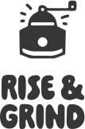
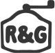
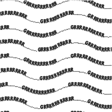
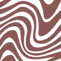
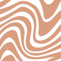

Logotype

Variants
Raw
#005757
Mocha
#8a5956
Latte
#d99e80
Irish
#f6c65d
Palette




Pattern
PAIN DE MIE
A B C D E F G E H J K L M N O P
P Q R S T U V W X Y Z
1 2 3 4 5 6 7 8 9 0
A B C D E F G E H J K L M N O P
P Q R S T U V W X Y Z
1 2 3 4 5 6 7 8 9 0
Masqualero
A B C D E F G E H J K L M N O P
P Q R S T U V W X Y Z
1 2 3 4 5 6 7 8 9 0
A B C D E F G E H J K L M N O P
P Q R S T U V W X Y Z
1 2 3 4 5 6 7 8 9 0
Typeface
About: "Rise and Grind" is more than just a café; it's a haven for those seeking
comfort,good vibes, and a touch of quirkiness. The core inspiration behind
the cafe lies in the fusion of whimsical illustrative design and a contemporary,
feel-good, groovy aesthetic. The vintage coffee grinder symbolizes a
simpler, slower time when coffee was prepared by hand, fostering moments
of reflection in contrast to our fast-paced world.
"Rise and Grind," playfully twists the familiar saying "Rise and Shine" and in a world where the daily grind often feels relentless, "Rise and Grind" offers a playful nod to the modern meme culture that humorously critiques the relentless pursuit of success and the 'hustle and grind' mentality that many young people are navigating in today's capitalist society. But here's the twist - instead of promoting the never-ending grind, the cafe invites any generation to pause, take a breath, and savor the simple pleasures of life.
Inspiration: Despite my initial inclination towards a modern and minimalistic approach, I felt compelled to infuse a breath of freshness and uniqueness into the design I was making. I envisioned a haven where like-minded individuals could gather and share interests. A place that welcomes and celebrates it's community in all it's glory, a place with warmth and individuality. That is when the first spark of inspiration of Rise & Grind ignited in my mind...
If you find the design appealing or have any inquiries or questions, I would be delighted to hear from you. Please feel free to reach out to me using the contact options provided below.
"Rise and Grind," playfully twists the familiar saying "Rise and Shine" and in a world where the daily grind often feels relentless, "Rise and Grind" offers a playful nod to the modern meme culture that humorously critiques the relentless pursuit of success and the 'hustle and grind' mentality that many young people are navigating in today's capitalist society. But here's the twist - instead of promoting the never-ending grind, the cafe invites any generation to pause, take a breath, and savor the simple pleasures of life.
Inspiration: Despite my initial inclination towards a modern and minimalistic approach, I felt compelled to infuse a breath of freshness and uniqueness into the design I was making. I envisioned a haven where like-minded individuals could gather and share interests. A place that welcomes and celebrates it's community in all it's glory, a place with warmth and individuality. That is when the first spark of inspiration of Rise & Grind ignited in my mind...
If you find the design appealing or have any inquiries or questions, I would be delighted to hear from you. Please feel free to reach out to me using the contact options provided below.